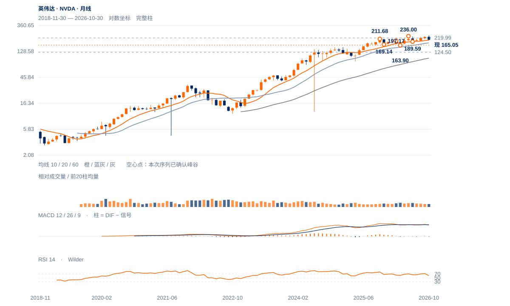

近期偏高波动弱势反抽，2—6周先核新窗口和148.80旧低能否恢复，不能沿用等待原低再测试。
英伟达 · 2026-11-20完整收盘
125.53低收后，148.80已失效意味着什么？
125.53-14.01%
大量回收候选失败
分期限展望
未来2—6周先检验143.725—145.71新下窗口和148.80旧低，再看170.77。20日大量大跌使原底部候选失败，极端反弹可以发生，但反转需要新谷与窗口回收共同验证。
未来1—3个月以243.37大高后的中期下降重建为主。当前没有合格新底和可外推测幅，须先形成止跌—回收窗口—抬高周谷链条；不能以超卖或一次巨量替代结构修复。

长期背景
10月243.37大高后已破6月189.80谷及10/20月均衡，属于长期升势中的实质中期损伤。超卖和大量都不等于底部已确认。完整10月均衡和历史水平只提供背景，当前价格需要由后续确认检验。 当前日收盘125.53与已完成月线背景分开判断；11月仍未结束，不提前计为完整月级反转。
中期结构与新证据
完整周线已更新至11月20日：2026-09-04高234.50（2026-09-18确认）；2026-09-14低208.93（2026-10-02确认）；2026-10-06高243.37（2026-10-23确认）。最新一周与上次11月13日背景分别保存；23日仅为本周进行中观察。19日145.98触发148.80原回收低失效，20日125.53继续大跌；20日最高143.725低于19日最低145.71，形成新的143.725—145.71下窗口。12日大量回收未形成可靠底部，243.37大高后中期下降进一步扩展。
确认与失效
143.725—145.71窗口收回并保持，再看148.80与170.77。
原148.80失效不抹去；未完成新底前不以超卖推算精确终点。
主要反方
大跌和大量可能接近抛售极端，但只有价格回收及后续更高低点才能验证衰竭。
波动与量能
RSI14 15.05；ATR14 10.71；相对量2.44倍